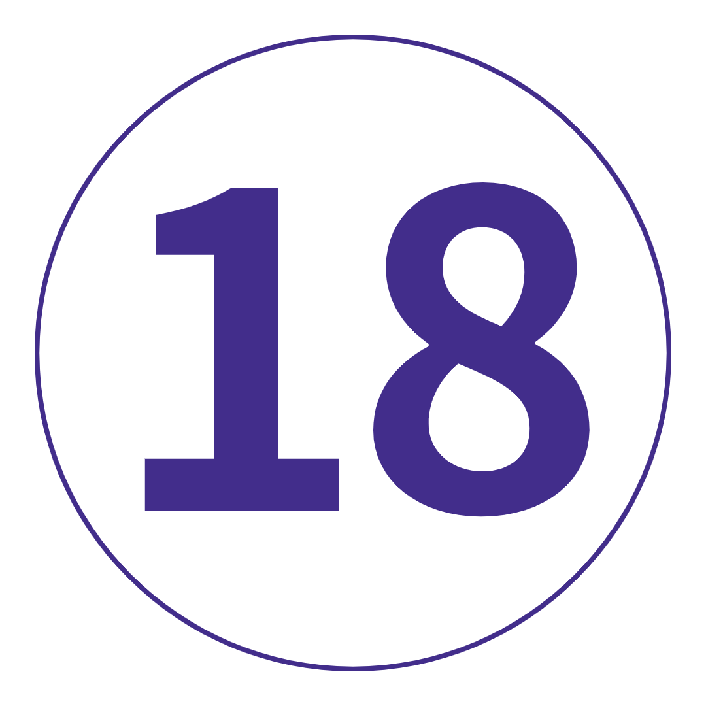

여행 개요
지도
당신을 위한 여행인가요? 마법 같은. 매혹적인. 기억에 남습니다.
당신은 해냈습니다 - 당신은 그럭저럭 14일에 너무 완벽하게 들어맞는 유로 여행의 폭죽을 찾았습니다.
사실이라고 하기에는 너무 좋습니다. 큰 도시와 매혹적인 숨겨진 보석 중 일부를 주연으로;
많은 양동이 목록 항목과 모든 것이 서유럽에서만 제공할 수 있는 가슴 훈훈하고 속이 든든하고 탄수화물이 풍부한 즐거움 - 이 여행은 이를 해결했습니다.
유럽의 겨울에 이보다 더 좋은 소개는 없습니다.
여행 일정
-
 영국 런던에서 프랑스 파리로(또는 파리에 합류)
일상을 뒤로하고 겨울의 영광 속에서 유럽을 발견할 준비를 하십시오. 우리는 일찍 길을 나서 영국 해협을 가로질러 운전할 것입니다. 라이드를 사용하여 봉주르와 실부 플레어를 닦고 멋진 AF 여행 동료를 만나십시오. 이게 다야! 코코 샤넬, 모나리자 및 세계에서 가장 맛있는 페이스트리의 고향 - 파리는 패션, 문화, 군침이 도는 음식의 모든 것에 대해 유럽의 수도라는 명성을 얻었습니다. 오늘 밤 포함된 저녁 식사에서 진정한 프랑스 요리를 맛보기 전에 드라이브 투어에서 모든 쇼스토퍼를 확인하세요. 나중에 감사합니다.
영국 런던에서 프랑스 파리로(또는 파리에 합류)
일상을 뒤로하고 겨울의 영광 속에서 유럽을 발견할 준비를 하십시오. 우리는 일찍 길을 나서 영국 해협을 가로질러 운전할 것입니다. 라이드를 사용하여 봉주르와 실부 플레어를 닦고 멋진 AF 여행 동료를 만나십시오. 이게 다야! 코코 샤넬, 모나리자 및 세계에서 가장 맛있는 페이스트리의 고향 - 파리는 패션, 문화, 군침이 도는 음식의 모든 것에 대해 유럽의 수도라는 명성을 얻었습니다. 오늘 밤 포함된 저녁 식사에서 진정한 프랑스 요리를 맛보기 전에 드라이브 투어에서 모든 쇼스토퍼를 확인하세요. 나중에 감사합니다.
키워드 공식 만찬 + 파리의 드라이브 투어 파리
에펠탑 아래에는 값비싼 핸드백과 독창적이지 않은 포즈보다 더 많은 것이 있습니다. 그리고 그것을 증명하기 위해 진정한 파리를 발견할 수 있는 24시간을 제공합니다. 우리의 제안? 선택 가능한 자전거 여행에서 버킷리스트 항목을 체크하고 송아지를 따뜻하게 유지하는 자유 시간을 보내십시오. 그런 다음: 뒷골목을 탐험하세요. 마을 최고의 제과점을 찾아보세요. Shakespeare and Co. Books에서 역사의 서가 사이에서 길을 잃으십시오. 또는 Catacombes de Paris에서 도시의 비밀 지하 세계를 발견하십시오. 다른 각도를 원하십니까? 테이크아웃 쇼콜라 쇼(핫 초콜릿)를 들고 선택 사항인 센 강 유람선에 정착하십시오. 또는 몽파르나스 타워로 올라가 모든 전망을 감상하세요. 오늘 밤에는 카드에 선택적인 카바레 쇼가 있습니다. 당신은 결국 캉캉의 고향에 있습니다.
파리
에펠탑 아래에는 값비싼 핸드백과 독창적이지 않은 포즈보다 더 많은 것이 있습니다. 그리고 그것을 증명하기 위해 진정한 파리를 발견할 수 있는 24시간을 제공합니다. 우리의 제안? 선택 가능한 자전거 여행에서 버킷리스트 항목을 체크하고 송아지를 따뜻하게 유지하는 자유 시간을 보내십시오. 그런 다음: 뒷골목을 탐험하세요. 마을 최고의 제과점을 찾아보세요. Shakespeare and Co. Books에서 역사의 서가 사이에서 길을 잃으십시오. 또는 Catacombes de Paris에서 도시의 비밀 지하 세계를 발견하십시오. 다른 각도를 원하십니까? 테이크아웃 쇼콜라 쇼(핫 초콜릿)를 들고 선택 사항인 센 강 유람선에 정착하십시오. 또는 몽파르나스 타워로 올라가 모든 전망을 감상하세요. 오늘 밤에는 카드에 선택적인 카바레 쇼가 있습니다. 당신은 결국 캉캉의 고향에 있습니다.
키워드 아침밥
추가 옵션 파리 카바레 쇼: €80부터 / 세느강 유람선: €10부터 / 파리 자전거 투어: €30부터 파리에서 스위스 알프스,스위스까지
면책 조항: 오늘은 약간의 드라이브입니다. 하지만 이미 알고 계셨죠? 끈을 묶으십시오. 여행 동료에 대해 더 잘 알아보세요. 그리고 가장 입이 떡 벌어지고 눈 덮인 풍경이 창 너머로 윙윙거리는 소리를 들을 수 있습니다. 그들은 집에서 이와 같은 전망을 가지고 있지 않습니다. 동화 같은 마을과 상상의 낭만적인 성을 큐에 넣으세요. 오묘한 엥겔베르그가 다음 이틀 밤 우리의 거점이 될 것입니다. 나중에, 우리는 호텔 바에 향하기 전에 그룹 저녁 식사에 갇힐 것입니다. 또는 김이 모락모락 나는 글루바인 한잔과 함께 상쾌한(참고: 얼어붙은) 고산 공기에 앉아 있습니다. 예, 이것이 당신이 온 이유입니다.
파리에서 스위스 알프스,스위스까지
면책 조항: 오늘은 약간의 드라이브입니다. 하지만 이미 알고 계셨죠? 끈을 묶으십시오. 여행 동료에 대해 더 잘 알아보세요. 그리고 가장 입이 떡 벌어지고 눈 덮인 풍경이 창 너머로 윙윙거리는 소리를 들을 수 있습니다. 그들은 집에서 이와 같은 전망을 가지고 있지 않습니다. 동화 같은 마을과 상상의 낭만적인 성을 큐에 넣으세요. 오묘한 엥겔베르그가 다음 이틀 밤 우리의 거점이 될 것입니다. 나중에, 우리는 호텔 바에 향하기 전에 그룹 저녁 식사에 갇힐 것입니다. 또는 김이 모락모락 나는 글루바인 한잔과 함께 상쾌한(참고: 얼어붙은) 고산 공기에 앉아 있습니다. 예, 이것이 당신이 온 이유입니다.
키워드 아침밥 + 공식 만찬 스위스 알프스
겨울의 스위스를 설명하는 단어는 MAGIC입니다. 그래서, 이것이 정확히 무엇을 의미하는지 알아볼 수 있는 자유 시간입니다. 맑은 날을 위한 우리의 제안은? 회전 곤돌라를 타고 티틀리스 산 정상까지 올라가 믿을 수 없는 파노라마를 감상하세요(노력 없이). 또는 부츠를 신고 숲길을 탐험하세요. '거룩한' 순간이 보장됩니다. 오히려 이곳의 미식의 경이로움을 발견하시겠습니까? 시내로 향하여 타오르는 불 옆에서 세계 최고의 핫 초콜릿을 한 모금 즐기십시오. 무엇을 선택하든 며칠 동안 조회수가 표시됩니다. 오늘 저녁은 당신의 몫입니다. 아직 치즈 퐁듀를 먹어보지 못하셨나요? 지금이 기회입니다(유당 불내증이 아닌 경우).
스위스 알프스
겨울의 스위스를 설명하는 단어는 MAGIC입니다. 그래서, 이것이 정확히 무엇을 의미하는지 알아볼 수 있는 자유 시간입니다. 맑은 날을 위한 우리의 제안은? 회전 곤돌라를 타고 티틀리스 산 정상까지 올라가 믿을 수 없는 파노라마를 감상하세요(노력 없이). 또는 부츠를 신고 숲길을 탐험하세요. '거룩한' 순간이 보장됩니다. 오히려 이곳의 미식의 경이로움을 발견하시겠습니까? 시내로 향하여 타오르는 불 옆에서 세계 최고의 핫 초콜릿을 한 모금 즐기십시오. 무엇을 선택하든 며칠 동안 조회수가 표시됩니다. 오늘 저녁은 당신의 몫입니다. 아직 치즈 퐁듀를 먹어보지 못하셨나요? 지금이 기회입니다(유당 불내증이 아닌 경우).
키워드 아침밥
추가 옵션 Titlis 산으로의 경치 좋은 여행: CHF 64부터 스위스 알프스에서 이탈리아 피렌체까지
마지막 눈덩이로 여행 리더를 때리고 꿈결 같은 서리로 덥은 봉우리의 또 다른 사진을 찍습니다. 당신은 당신의 뚱뚱한 바지를 포장, 오른쪽? 오늘 밤 포함된 저녁 식사 전에, 이 기분에 딱 맞는 사람들을 위해 양탄자를 깔고 아르노 강을 따라 산책을 즐겨보세요. 그럼: 누가 노래방이라고 했지? 당신이 그것을 원한다면 지역 바에서 발라드의 전투에서 갱단에 합류하십시오. 또는 젤라테리아에서 좋은 재료를 한 스쿱(또는 두 개) 찾아보세요. 누가 겨울에 젤라토를 먹을 수 없다고 했습니까? 아무도.
스위스 알프스에서 이탈리아 피렌체까지
마지막 눈덩이로 여행 리더를 때리고 꿈결 같은 서리로 덥은 봉우리의 또 다른 사진을 찍습니다. 당신은 당신의 뚱뚱한 바지를 포장, 오른쪽? 오늘 밤 포함된 저녁 식사 전에, 이 기분에 딱 맞는 사람들을 위해 양탄자를 깔고 아르노 강을 따라 산책을 즐겨보세요. 그럼: 누가 노래방이라고 했지? 당신이 그것을 원한다면 지역 바에서 발라드의 전투에서 갱단에 합류하십시오. 또는 젤라테리아에서 좋은 재료를 한 스쿱(또는 두 개) 찾아보세요. 누가 겨울에 젤라토를 먹을 수 없다고 했습니까? 아무도.
키워드 아침밥 + 공식 만찬 피렌체-로마
플로렌스는 왕좌의 게임보다 더 많은 스토리 라인을 가지고 있고, Fitzroy 힙스터보다 더 많은 문화를 가지고 있으며, 세계에 David를 주었습니다. 현지 가이드와 함께 도보 여행을 통해 이 놀라운 도시에 대해 더 깊이 알아보세요. 나중에 la bella Roma가 우리 이름을 부르고 있습니다. 2500년의 역사. 베스파. 에스프레소. 두 뺨 키스. 공격적인 손짓. 그리고 피자는 그 맛 그대로. 로마가 유럽에서 꼭 해야 할 일 목록의 맨 위에 있는 이유가 있습니다. 그리고 그것은 겨울에 훨씬 더 좋습니다(우리의 완전히 편견 없는 의견). 오늘 밤, 당신은 미식가를 위해 디즈니랜드에 있습니다. 그러니 뚱뚱한 바지를 털어내고 최고의 카시오 에페를 어디에서 찾을 수 있는지 여행 리더에게 물어보십시오. 실망하지 않으실 거에요. 저희를 믿으세요.
피렌체-로마
플로렌스는 왕좌의 게임보다 더 많은 스토리 라인을 가지고 있고, Fitzroy 힙스터보다 더 많은 문화를 가지고 있으며, 세계에 David를 주었습니다. 현지 가이드와 함께 도보 여행을 통해 이 놀라운 도시에 대해 더 깊이 알아보세요. 나중에 la bella Roma가 우리 이름을 부르고 있습니다. 2500년의 역사. 베스파. 에스프레소. 두 뺨 키스. 공격적인 손짓. 그리고 피자는 그 맛 그대로. 로마가 유럽에서 꼭 해야 할 일 목록의 맨 위에 있는 이유가 있습니다. 그리고 그것은 겨울에 훨씬 더 좋습니다(우리의 완전히 편견 없는 의견). 오늘 밤, 당신은 미식가를 위해 디즈니랜드에 있습니다. 그러니 뚱뚱한 바지를 털어내고 최고의 카시오 에페를 어디에서 찾을 수 있는지 여행 리더에게 물어보십시오. 실망하지 않으실 거에요. 저희를 믿으세요.
키워드 아침밥 + 현지 가이드와 함께하는 피렌체 도보 여행 + 로마의 도보 여행 + 로마 지하철 티켓 로마
250만 년의 역사. 베스파스요 에스프레소요 볼이 두 개인 키스. 공격적인 손동작. 그리고 피자는 원래 맛대로 먹을 수 있어. 로마가 유럽의 필수품목표에 오른 데는 이유가 있다. 그리고 겨울에는 훨씬 더 좋다. 저희가 아까 준비한 자유일입니다. 겉만 번지르르하게 하지 말고 매 순간을 최대한 경험해 보세요. 당신의 축복을 세고 바티칸 시티의 선택적 여행에서 역사적인 걸작들과 함께 아이스파이 놀이를 하세요. 산탄젤로 성을 확인해 보세요. 군밤으로 간식을 먹고 티베르 강을 거닐다. 피자라리움 본치에서 한 조각 먹기 위해 점심시간을 다투어라. 비아 콘도티에 들를 때까지 쇼핑하세요. 아니면 스케이트를 신고 링크에 올라가세요. 오늘 밤, 파스타 Alla Carbonara를 주문하고 여러분의 마음을 날려버릴 준비를 하세요.
로마
250만 년의 역사. 베스파스요 에스프레소요 볼이 두 개인 키스. 공격적인 손동작. 그리고 피자는 원래 맛대로 먹을 수 있어. 로마가 유럽의 필수품목표에 오른 데는 이유가 있다. 그리고 겨울에는 훨씬 더 좋다. 저희가 아까 준비한 자유일입니다. 겉만 번지르르하게 하지 말고 매 순간을 최대한 경험해 보세요. 당신의 축복을 세고 바티칸 시티의 선택적 여행에서 역사적인 걸작들과 함께 아이스파이 놀이를 하세요. 산탄젤로 성을 확인해 보세요. 군밤으로 간식을 먹고 티베르 강을 거닐다. 피자라리움 본치에서 한 조각 먹기 위해 점심시간을 다투어라. 비아 콘도티에 들를 때까지 쇼핑하세요. 아니면 스케이트를 신고 링크에 올라가세요. 오늘 밤, 파스타 Alla Carbonara를 주문하고 여러분의 마음을 날려버릴 준비를 하세요.
키워드 아침밥
추가 옵션 바티칸 시국 가이드 투어: €45부터 로마-베니스
로마에 작별 인사를 하십시오. 우리는 오늘 그 유명한 침몰하는 도시로 향하고 있습니다. 호텔에 체크인한 후에는 모든 소란이 무엇인지 확인할 시간입니다. 산마르코 광장, 도제의 궁전, 아카데미아 다리 등을 둘러보는 도보 여행을 통해 베니스의 흔한 용의자들에 대해 알아보세요. 그리고 나서 – 이 아름답고 낭만적인 도시는 당신의 것입니다. 우리의 제안? 운하가 내려다보이는 마끼아또를 들고 곤돌라 기사가 배를 안개 속으로 안내하는 모습을 지켜보세요. 이 곳은 온통 로맨스가 쓰여져 있습니다. 나중에 Osteria Al Portego에서 값싼 식사를 하거나 군침이 도는 베네치안 패스트리로 배를 채우십시오(여기서는 판단하지 않음).
로마-베니스
로마에 작별 인사를 하십시오. 우리는 오늘 그 유명한 침몰하는 도시로 향하고 있습니다. 호텔에 체크인한 후에는 모든 소란이 무엇인지 확인할 시간입니다. 산마르코 광장, 도제의 궁전, 아카데미아 다리 등을 둘러보는 도보 여행을 통해 베니스의 흔한 용의자들에 대해 알아보세요. 그리고 나서 – 이 아름답고 낭만적인 도시는 당신의 것입니다. 우리의 제안? 운하가 내려다보이는 마끼아또를 들고 곤돌라 기사가 배를 안개 속으로 안내하는 모습을 지켜보세요. 이 곳은 온통 로맨스가 쓰여져 있습니다. 나중에 Osteria Al Portego에서 값싼 식사를 하거나 군침이 도는 베네치안 패스트리로 배를 채우십시오(여기서는 판단하지 않음).
키워드 아침밥 + 베니스 버스 티켓 + 베니스의 도보 여행
추가 옵션 맞춤 여행 티셔츠 또는 후드티를 받으세요: 최저 €21 베니스
수백 년 된 건축물. 독창적인 요리. 그리고 양동이의 문화. 베니스는 탐험을 구걸하고 있습니다. 대운하를 따라 곤돌라를 탄 후 하루 종일 그렇게 할 수 있습니다. 내부 팁: 시간을 할애하여 이 세상에 없는 Libreria Acqua Alta 서점을 찾거나 Giudecca Island로 여행을 떠나 관광 트레일을 떠나십시오. 방황하십시오. 가난한 이탈리아어로 현지인들과 이야기를 나누세요. 운하와 광장의 미로에서 길을 잃으십시오. 그런 다음 Café Florian에서 진한 핫 초콜릿과 잘레티 비스킷이 담긴 파이핑 머그를 찾으십시오. 그것이 추억을 만드는 것입니다.
베니스
수백 년 된 건축물. 독창적인 요리. 그리고 양동이의 문화. 베니스는 탐험을 구걸하고 있습니다. 대운하를 따라 곤돌라를 탄 후 하루 종일 그렇게 할 수 있습니다. 내부 팁: 시간을 할애하여 이 세상에 없는 Libreria Acqua Alta 서점을 찾거나 Giudecca Island로 여행을 떠나 관광 트레일을 떠나십시오. 방황하십시오. 가난한 이탈리아어로 현지인들과 이야기를 나누세요. 운하와 광장의 미로에서 길을 잃으십시오. 그런 다음 Café Florian에서 진한 핫 초콜릿과 잘레티 비스킷이 담긴 파이핑 머그를 찾으십시오. 그것이 추억을 만드는 것입니다.
키워드 아침밥 + 대운하를 타고 내려가는 곤돌라 베니스에서 오스트리아 잘츠부르크로
오늘: 우리는 잘츠부르크로 향하는 코스를 정하고 있습니다. 슈트루델(strudel)과 사운드 오브 뮤직(Sound of Music)보다 훨씬 더 많은 이 곳은 모든 웅장한 바로크 양식의 건물에 우아함이 새겨져 있습니다. 좋아하는 비니를 입고 양털 양말을 신고 미라벨 정원, 모차르트의 생가, 호엔잘츠부르크 요새, 대성당 등을 전문 여행 리더와 함께 도보 여행으로 안내해 드립니다. 배고파? 우리는 당신을 얻었습니다 – 오늘 저녁 식사는 우리에게 있습니다.
베니스에서 오스트리아 잘츠부르크로
오늘: 우리는 잘츠부르크로 향하는 코스를 정하고 있습니다. 슈트루델(strudel)과 사운드 오브 뮤직(Sound of Music)보다 훨씬 더 많은 이 곳은 모든 웅장한 바로크 양식의 건물에 우아함이 새겨져 있습니다. 좋아하는 비니를 입고 양털 양말을 신고 미라벨 정원, 모차르트의 생가, 호엔잘츠부르크 요새, 대성당 등을 전문 여행 리더와 함께 도보 여행으로 안내해 드립니다. 배고파? 우리는 당신을 얻었습니다 – 오늘 저녁 식사는 우리에게 있습니다.
키워드 아침밥 + 공식 만찬 + 잘츠부르크 도보 여행 잘츠부르크에서 독일 하이델베르크까지
마지막으로 오스트리아산 커피 한 잔을 마시며 오늘은 동화 같은 하이델베르크로 향하는 길을 만들고 있습니다. 이 장소는 언덕 위의 폐허, 자갈이 깔린 구시가지 및 노벨상 수상자(임의로)에 관한 모든 것입니다. 여행 리더와 함께 산책을 즐기면 나머지 오후는 당신에게 달려 있습니다. 케이블카를 타고 궁전까지 올라가서 믿을 수 없는 경치를 감상해 보세요. 또는 머리 크기의 포크 너클을 먹을 수 있는 현지 식당을 찾아보세요. 여기가 바로 독일입니다.
잘츠부르크에서 독일 하이델베르크까지
마지막으로 오스트리아산 커피 한 잔을 마시며 오늘은 동화 같은 하이델베르크로 향하는 길을 만들고 있습니다. 이 장소는 언덕 위의 폐허, 자갈이 깔린 구시가지 및 노벨상 수상자(임의로)에 관한 모든 것입니다. 여행 리더와 함께 산책을 즐기면 나머지 오후는 당신에게 달려 있습니다. 케이블카를 타고 궁전까지 올라가서 믿을 수 없는 경치를 감상해 보세요. 또는 머리 크기의 포크 너클을 먹을 수 있는 현지 식당을 찾아보세요. 여기가 바로 독일입니다.
키워드 아침밥 + 하이델베르크 오리엔테이션 투어 하이델베르크에서 네덜란드 암스테르담까지
우리의 여행은 끝이 날지 모르지만 아직 끝나지 않았습니다! 우리는 오늘 암스테르담에 눈을 떴습니다. 짐을 버리고 자갈을 치세요. 담 광장, 왕궁, 국립 기념물이 기다리고 있습니다. 오늘 밤 저녁 식사는 선택의 폭이 넓을 것입니다. 네덜란드식 스테이크하우스 , 트렌디한 비건 식당, 고급 일품 요리 메뉴, 그리고 인생 최고의 테이크아웃 핫 칩스입니다. 보장. 나중에 홍등가에서 쇼를 경험할 수 있는 옵션이 있습니다. 또는 실제 네덜란드를 경험하고 싶다면 Proeflokaal Arendsnest로 향하여 100가지가 넘는 현지 맥주와 독특한 군중을 선택하십시오.
하이델베르크에서 네덜란드 암스테르담까지
우리의 여행은 끝이 날지 모르지만 아직 끝나지 않았습니다! 우리는 오늘 암스테르담에 눈을 떴습니다. 짐을 버리고 자갈을 치세요. 담 광장, 왕궁, 국립 기념물이 기다리고 있습니다. 오늘 밤 저녁 식사는 선택의 폭이 넓을 것입니다. 네덜란드식 스테이크하우스 , 트렌디한 비건 식당, 고급 일품 요리 메뉴, 그리고 인생 최고의 테이크아웃 핫 칩스입니다. 보장. 나중에 홍등가에서 쇼를 경험할 수 있는 옵션이 있습니다. 또는 실제 네덜란드를 경험하고 싶다면 Proeflokaal Arendsnest로 향하여 100가지가 넘는 현지 맥주와 독특한 군중을 선택하십시오.
키워드 아침밥 + 암스테르담 지하철 티켓
추가 옵션 홍등가 쇼: €30부터 암스테르담
이것이 우리의 마지막 하루입니다. FFS는 주저하지 마십시오. 지역 주민들과 함께 자전거를 타십시오! 옵션으로 제공되는 자전거 투어를 통해 암스테르담의 상징적인 운하, 다리, 공원을 둘러보세요. 역사 애호가라면 안네 프랑크의 집을 방문해야 합니다(사전 예약을 잊지 마세요!). 그리고 반 고흐 미술관과 국립 미술관은 문화 애호가들을 위한 것입니다. 그런 다음 각각 고유한 분위기를 지닌 다른 지구의 뒷골목에서 길을 잃으십시오. 오늘 밤 포함된 저녁 식사에서 경이로 가득한 모험의 마지막 밤을 건배하기 위해 제 시간에 돌아왔는지 확인하십시오.
암스테르담
이것이 우리의 마지막 하루입니다. FFS는 주저하지 마십시오. 지역 주민들과 함께 자전거를 타십시오! 옵션으로 제공되는 자전거 투어를 통해 암스테르담의 상징적인 운하, 다리, 공원을 둘러보세요. 역사 애호가라면 안네 프랑크의 집을 방문해야 합니다(사전 예약을 잊지 마세요!). 그리고 반 고흐 미술관과 국립 미술관은 문화 애호가들을 위한 것입니다. 그런 다음 각각 고유한 분위기를 지닌 다른 지구의 뒷골목에서 길을 잃으십시오. 오늘 밤 포함된 저녁 식사에서 경이로 가득한 모험의 마지막 밤을 건배하기 위해 제 시간에 돌아왔는지 확인하십시오.
키워드 아침밥 + 공식 만찬
추가 옵션 암스테르담 자전거 투어: €14부터 암스테르담에서 영국 런던으로
아침 식사 후 해협을 건너 런던 타운으로 돌아갈 시간입니다. 따뜻한 아펠타아트를 테이크아웃하세요. 마지막으로 여행 노래를 불러주세요. 그리고 계획을 세우십시오. 동창회 여행은 저절로 예약되지 않습니다! 다음은 어디로?
암스테르담에서 영국 런던으로
아침 식사 후 해협을 건너 런던 타운으로 돌아갈 시간입니다. 따뜻한 아펠타아트를 테이크아웃하세요. 마지막으로 여행 노래를 불러주세요. 그리고 계획을 세우십시오. 동창회 여행은 저절로 예약되지 않습니다! 다음은 어디로?
키워드 아침밥
포함된 항목
포함된 경험
숙소
교통
파리의 드라이브 투어
현지 가이드와 함께하는 피렌체 도보 여행
로마의 도보 여행
베니스의 도보 여행
베니스에서 곤돌라 타기
잘츠부르크의 도보 여행
하이델베르크 오리엔테이션 투어
호텔에서 13박(트윈 또는 더블)
전자 제품 충전을 위한 파워포인트를 포함하여 무료 Wi-Fi와 에어컨이 완비된 현대적인 코치 선택 활동
- 파리 카바레 쇼: €65부터
- 센 강 유람선: €10부터
- 파리 자전거 투어: €30부터
- 티틀리스 산으로의 경치 좋은 여행: CHF 64부터
- 바티칸 시국 가이드 투어: €45부터
- 맞춤형 여행용 티셔츠 또는 후드티 받기: 최저 €21
- 홍등가 쇼: €30부터
- 암스테르담 자전거 투어: €14부터
투어 동영상, 사진, 리뷰
14 일
7 국가1 인당
US $ 2,726.00 부터
여행 코드: EHWWLL-1-1
여행 노트 다운로드-
날짜 및 가격 확인
2021년 11월 11월 21일 일 ~ 12월 4일 토 윈터 원더 2021-22 US$2,815.00 2021년 12월 12월 15일 수 ~ 12월 28일 화 윈터 원더 2021-22 US$3,066.00 2022년 1월 1월 23일 일 ~ 2월 5일 토 윈터 원더 2021-22 US$2,726.00
여행개요
 밤
밤 식사  호텔
호텔 최대 인원
최대 인원 여행 가이드
여행 가이드
시 작 06 : 00 런던 (또는 17 : 00 파리) 종 료 09 : 00 암스테르담 (또는 21 : 00 런던)